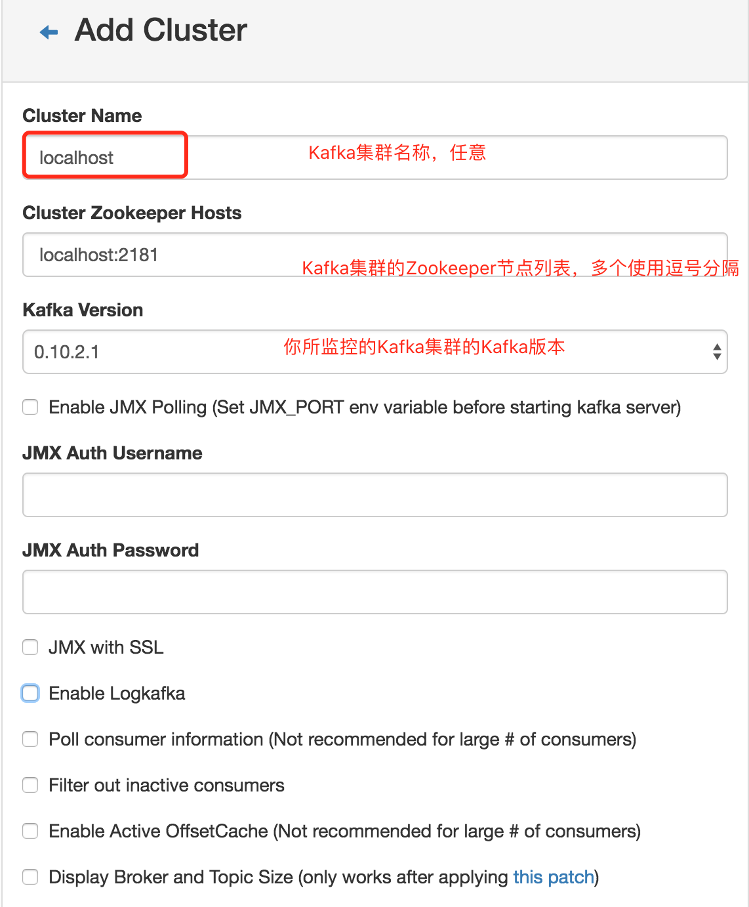

<!DOCTYPE HTML>
<html lang="zh-CN">
<head><meta name="generator" content="Hexo 3.8.0">
    <!--Setting-->
    <meta charset="UTF-8">
    <meta name="viewport" content="width=device-width, user-scalable=no, initial-scale=1.0, maximum-scale=1.0, minimum-scale=1.0">
    <meta http-equiv="X-UA-Compatible" content="IE=Edge,chrome=1">
    <meta http-equiv="Cache-Control" content="no-siteapp">
    <meta http-equiv="Cache-Control" content="no-transform">
    <meta http-equiv="pragma" content="no-cache">
    <meta http-equiv="Cache-Control" content="no-cache, must-revalidate">
    <meta http-equiv="expires" content="Mon Apr 06 2020 02:12:40 GMT+0800 (CST)">
    <meta name="renderer" content="webkit|ie-comp|ie-stand">
    <meta name="apple-mobile-web-app-capable" content="张万众的博客 - 关注Spring Cloud、Docker">
    <meta name="apple-mobile-web-app-status-bar-style" content="black">
    <meta name="format-detection" content="telephone=no,email=no,adress=no">
    <meta name="browsermode" content="application">
    <meta name="screen-orientation" content="portrait">
    <meta name="theme-version" content="1.2.3">
    <meta name="root" content="/">
    
    <!--SEO-->

    <meta name="keywords" content="Kafka">


    <meta name="description" content="公司使用到了Kafka，想借助一套可视化的工具更好地管理Kafka。笔者将目光瞄准了Kafka Manager。

安装Kafka一、下载Kafka
前往http://kafka.apache.org/downloads ，根据自己的需要，下载合适版本的Kafka，笔者使用的版本是kafka_...">


<meta name="robots" content="all">
<meta name="google" content="all">
<meta name="googlebot" content="all">
<meta name="verify" content="all">
    <!--Title-->


<title>使用Kafka Manager管理Kafka集群 | 张万众的博客 - 关注Spring Cloud、Docker</title>


    <link rel="alternate" href="../../atom.html" title="张万众的博客 - 关注Spring Cloud、Docker" type="application/atom+xml">


    

    


<link rel="stylesheet" href="../../static/css/bootstrap.min-271a649e0635d6fa1b.css">
<link rel="stylesheet" href="../../static/css/font-awesome.min-ac2bebcf7fb5b26.css">
<link rel="stylesheet" href="../../static/css/style-6f3c140f6eee20e6591da00ec0.css">


    


    <script>
        var _hmt = _hmt || [];
        (function() {
            var hm = document.createElement("script");
            hm.src = "https://hm.baidu.com/hm.js?13766878cde148282622871dd245a973";
            var s = document.getElementsByTagName("script")[0];
            s.parentNode.insertBefore(hm, s);
        })();
    </script>


    

</head>

</html>
<!--[if lte IE 8]>
<style>
    html{ font-size: 1em }
</style>
<![endif]-->
<!--[if lte IE 9]>
<div style="ie">你使用的浏览器版本过低，为了你更好的阅读体验，请更新浏览器的版本或者使用其他现代浏览器，比如Chrome、Firefox、Safari等。</div>
<![endif]-->

<body>
    
    <nav class="main-navigation">
    <div class="container">
        <div class="row clearfix">
            <div class="col-md-12 column">
                <nav class="navbar navbar-default" style="background-color:#fff;border:0;margin-bottom:0" role="navigation">
                    <div class="navbar-header">
                        <button type="button" class="navbar-toggle" data-toggle="collapse" data-target="#navbar-collapse-1">
                            <span class="sr-only">切</span>
                            <span class="icon-bar"></span>
                            <span class="icon-bar"></span>
                            <span class="icon-bar"></span>
                        </button>
                        <a class="logo" href="../../index.html">
                            张万众的博客
                        </a>
                    </div>

                    <div class="collapse navbar-collapse" style="border:0;" id="navbar-collapse-1">
                        <ul class="nav navbar-nav">
                            
                                
                                    <li>
                                        <a href="../../about.html" target="_blank">
                                            <i class="fa fa-user"></i>
                                            关于我
                                        </a>
                                    </li>
                                
                            
                                
                                    <li>
                                        <a href="../../archives.html" target="_blank">
                                            <i class="fa fa-archive"></i>
                                            归档
                                        </a>
                                    </li>
                                
                            
                                
                                    <li class="dropdown">
                                        <a href="#" class="dropdown-toggle" data-toggle="dropdown" data-hover="dropdown">
                                            <i class="fa fa-fire"></i>
                                            系列课程
                                            <strong class="caret"></strong>
                                        </a>
                                        <ul class="dropdown-menu">
                                            
                                                <li>
                                                    <a href="../../docker/00-docker-lession-index.html" target="_blank">
                                                        <i class="fa "></i>
                                                        Docker系列教程
                                                    </a>
                                                </li>
                                            
                                                <li>
                                                    <a href="../../spring-cloud/spring-cloud-index.html" target="_blank">
                                                        <i class="fa "></i>
                                                        Spring Cloud系列教程
                                                    </a>
                                                </li>
                                            
                                                <li>
                                                    <a href="../../spring-boot/spring-boot-index.html" target="_blank">
                                                        <i class="fa "></i>
                                                        Spring Boot系列教程
                                                    </a>
                                                </li>
                                            
                                        </ul>
                                    </li>
                                
                            
                                
                                    <li class="dropdown">
                                        <a href="#" class="dropdown-toggle" data-toggle="dropdown" data-hover="dropdown">
                                            <i class="fa fa-book"></i>
                                            开源书
                                            <strong class="caret"></strong>
                                        </a>
                                        <ul class="dropdown-menu">
                                            
                                                <li>
                                                    <a href="../../books/rocketmq.html" target="_blank">
                                                        <i class="fa fa-rocket"></i>
                                                        RocketMQ开发者指南
                                                    </a>
                                                </li>
                                            
                                                <li>
                                                    <a href="../../books/skywalking.html" target="_blank">
                                                        <i class="fa fa-skyatlas"></i>
                                                        Skywalking 6.2.0中文文档
                                                    </a>
                                                </li>
                                            
                                        </ul>
                                    </li>
                                
                            
                                
                                    <li class="dropdown">
                                        <a href="#" class="dropdown-toggle" data-toggle="dropdown" data-hover="dropdown">
                                            <i class="fa fa-cog"></i>
                                            工具
                                            <strong class="caret"></strong>
                                        </a>
                                        <ul class="dropdown-menu">
                                            
                                                <li>
                                                    <a href="../../tools/markdown2.html" target="_blank">
                                                        <i class="fa "></i>
                                                        微信排版工具2.0
                                                    </a>
                                                </li>
                                            
                                        </ul>
                                    </li>
                                
                            
                        </ul>
                        
                            <form id="search-form" class="navbar-form navbar-right">
                                <div class="form-group input-group">
                                    <input type="text" id="local-search-input" class="form-control" placeholder="搜我...">
                                    <span class="input-group-btn">
                                        <a class="btn btn-default">
                                            <i class="fa fa-search"></i>
                                        </a>
                                    </span>
                                </div>
                                <div id="local-search-result" class="local-search-result-cls"></div>
                            </form>
                        
                    </div>
                </nav>
            </div>
        </div>
    </div>
</nav>

    <a href="javascript:;" target="_blank">
        
    </a>


    <section class="content-wrap">
        <div class="container">
            <div class="row">
                <main class="col-md-8 main-content m-post">
                    

<p id="process"></p>
<article class="post">
    <div class="post-head">
        <h1 id="使用Kafka Manager管理Kafka集群">
            
                使用Kafka Manager管理Kafka集群
            
        </h1>
        <div class="post-meta">
    
        <span class="categories-meta fa-wrap">
            <i class="fa fa-folder-open-o"></i>
            <a class="category-link" href="../../categories/工作/index.html">工作</a>
        </span>
    

    
        <span class="fa-wrap">
            <i class="fa fa-tags"></i>
            <span class="tags-meta">
                
                    <a class="tag-link" href="javascript:;">Kafka</a>
                
            </span>
        </span>
    

    
        
        <span class="fa-wrap">
            <i class="fa fa-clock-o"></i>
            <span class="date-meta">2017/09/15</span>
        </span>
        
            <span class="fa-wrap">
                <i class="fa fa-eye"></i>
                <span id="busuanzi_value_page_pv"></span>
            </span>
        
    
</div>
        
        
    </div>
    
    <div class="post-body post-content" id="post-content">
        
    <div class="toc-article">
        <strong>
            目录
        </strong>
        <div class="toc-content">
            <ol class="toc"><li class="toc-item toc-level-1"><a class="toc-link" href="#安装Kafka"><span class="toc-text">安装Kafka</span></a></li><li class="toc-item toc-level-1"><a class="toc-link" href="#安装Kafka-Manager"><span class="toc-text">安装Kafka Manager</span></a></li><li class="toc-item toc-level-1"><a class="toc-link" href="#配置Kafka-Manager"><span class="toc-text">配置Kafka Manager</span></a></li><li class="toc-item toc-level-1"><a class="toc-link" href="#参考文档"><span class="toc-text">参考文档</span></a></li></ol>
        </div>
    </div>


        <p>公司使用到了Kafka，想借助一套可视化的工具更好地管理Kafka。笔者将目光瞄准了Kafka Manager。</p>
<a id="more"></a>
<h1 id="安装Kafka"><a href="#安装Kafka" class="headerlink" title="安装Kafka"></a>安装Kafka</h1><p><strong>一、下载Kafka</strong></p>
<p>前往<a href="javascript:;" target="_blank" rel="noopener">http://kafka.apache.org/downloads</a> ，根据自己的需要，下载合适版本的Kafka，笔者使用的版本是kafka_2.12-0.10.2.1。</p>
<p><strong>二、启动Kafka</strong></p>
<ul>
<li><p>启动Zookeeper。Kafka依赖Zookeeper，因此，启动Kafka前得先启动Zookeeper。在Kafka的根路径执行如下命令即可启动Zookeeper</p>
<figure class="highlight shell"><table><tr><td class="gutter"><pre><span class="line">1</span><br></pre></td><td class="code"><pre><span class="line">bin/zookeeper-server-start.sh config/zookeeper.properties &amp;</span><br></pre></td></tr></table></figure>
</li>
<li><p>启动Kafka。启动完Zookeeper后，即可启动Kafka。执行如下命令即可。</p>
<figure class="highlight shell"><table><tr><td class="gutter"><pre><span class="line">1</span><br></pre></td><td class="code"><pre><span class="line">bin/kafka-server-start.sh config/server.properties &amp;</span><br></pre></td></tr></table></figure>
</li>
</ul>
<p><strong>三、测试Kafka</strong></p>
<ul>
<li><p>创建一个Topic</p>
<figure class="highlight shell"><table><tr><td class="gutter"><pre><span class="line">1</span><br></pre></td><td class="code"><pre><span class="line">bin/kafka-topics.sh --create --zookeeper localhost:2181 --replication-factor 1 --partitions 1 --topic test</span><br></pre></td></tr></table></figure>
<p>如创建成功，将会显示类似如下的内容：</p>
<figure class="highlight shell"><table><tr><td class="gutter"><pre><span class="line">1</span><br></pre></td><td class="code"><pre><span class="line">Created topic "test".</span><br></pre></td></tr></table></figure>
</li>
<li><p>查看创建的Topic</p>
<figure class="highlight shell"><table><tr><td class="gutter"><pre><span class="line">1</span><br></pre></td><td class="code"><pre><span class="line">bin/kafka-topics.sh --list --zookeeper localhost:2181</span><br></pre></td></tr></table></figure>
</li>
<li><p>创建一个消息生产者</p>
<figure class="highlight shell"><table><tr><td class="gutter"><pre><span class="line">1</span><br></pre></td><td class="code"><pre><span class="line">bin/kafka-console-producer.sh --broker-list localhost:9092 --topic test</span><br></pre></td></tr></table></figure>
<p>此时，终端会滞留，我们可以随便输入一些内容，该内容将会生产到Kafka中。</p>
</li>
<li><p>创建一个消息消费者。新建一个终端，输入如下命令：</p>
<figure class="highlight shell"><table><tr><td class="gutter"><pre><span class="line">1</span><br></pre></td><td class="code"><pre><span class="line">bin/kafka-console-consumer.sh --zookeeper localhost:2181 --topic test --from-beginning</span><br></pre></td></tr></table></figure>
<p>如消费者可收到在生产者中输入的内容，则说明Kafka搭建成功。</p>
</li>
</ul>
<h1 id="安装Kafka-Manager"><a href="#安装Kafka-Manager" class="headerlink" title="安装Kafka Manager"></a>安装Kafka Manager</h1><p><strong>一、Kafka Manager简介</strong></p>
<p>Kafka Manager是一款非常强大的Kafka管理工具。功能如下：</p>
<ul>
<li>Manage multiple clusters</li>
<li>Easy inspection of cluster state (topics, consumers, offsets, brokers, replica distribution, partition distribution)</li>
<li>Run preferred replica election</li>
<li>Generate partition assignments with option to select brokers to use</li>
<li>Run reassignment of partition (based on generated assignments)</li>
<li>Create a topic with optional topic configs (0.8.1.1 has different configs than 0.8.2+)</li>
<li>Delete topic (only supported on 0.8.2+ and remember set delete.topic.enable=true in broker config)</li>
<li>Topic list now indicates topics marked for deletion (only supported on 0.8.2+)</li>
<li>Batch generate partition assignments for multiple topics with option to select brokers to use</li>
<li>Batch run reassignment of partition for multiple topics</li>
<li>Add partitions to existing topic</li>
<li>Update config for existing topic</li>
<li>Optionally enable JMX polling for broker level and topic level metrics.</li>
<li>Optionally filter out consumers that do not have ids/ owners/ &amp; offsets/ directories in zookeeper.</li>
</ul>
<p><strong>二、下载Kafka Manager</strong></p>
<p>前往<a href="javascript:;" target="_blank" rel="noopener">https://github.com/yahoo/kafka-manager/releases</a> ，根据自己的需要，下载合适版本的Kafka Manager源码，笔者使用的版本是1.3.3.13。</p>
<p><strong>三、构建</strong></p>
<p>由于Kafka Manager只提供了源码，并没有提供二进制包，因此我们需要对下载下来的源码进行构建，构建依赖工具sbt。</p>
<ul>
<li><p>安装sbt。在macOS中，执行如下命令即可安装sbt。对于其他操作系统，可参考官方文档进行安装：<a href="javascript:;" target="_blank" rel="noopener">http://www.scala-sbt.org/0.13/docs/Setup.html</a></p>
<figure class="highlight shell"><table><tr><td class="gutter"><pre><span class="line">1</span><br></pre></td><td class="code"><pre><span class="line">brew install sbt</span><br></pre></td></tr></table></figure>
</li>
<li><p>解压源码</p>
</li>
<li><p>在源码根目录下执行如下命令构建项目：</p>
<figure class="highlight shell"><table><tr><td class="gutter"><pre><span class="line">1</span><br></pre></td><td class="code"><pre><span class="line">sbt clean dist</span><br></pre></td></tr></table></figure>
<p><strong>由于伟大的墙</strong>，尽管我为sbt配置了<code>Aliyun</code> 等若干镜像仓库，依然很慢。<strong>经过长达100年的等待，本机依然无法构建成功</strong>。笔者实在受不了了，干脆在<code>Linode</code> 上购置了一台云服务器。在服务器上安装Java、sbt，并执行<code>sbt clean dist</code> 进行构建，只花了5分钟不到，构建就完成了，不得不鄙视国内的【局域网】。</p>
</li>
<li><p>构建成功后，在<code>target/universal</code> 目录下找到类似<code>kafka-manager-1.3.3.13.zip</code> 的文件，这个就是构件好的Kafka Manager啦。</p>
</li>
</ul>
<p><strong>四、配置</strong></p>
<ul>
<li><p>解压<code>kafka-manager-1.3.3.13.zip</code> 。</p>
</li>
<li><p>修改<code>conf/application.conf</code> ，将配置属性<code>kafka-manager.zkhosts</code> 改为您的zk集群地址。</p>
</li>
<li><p>在Kafka Manager根目录下执行如下命令，即可启动Kafka Manager。</p>
<figure class="highlight shell"><table><tr><td class="gutter"><pre><span class="line">1</span><br><span class="line">2</span><br><span class="line">3</span><br></pre></td><td class="code"><pre><span class="line">nohup bin/kafka-manager \</span><br><span class="line">-Dconfig.file=conf/application.conf \</span><br><span class="line"> -Dhttp.port=9000 &amp;</span><br></pre></td></tr></table></figure>
<p>如提示</p>
<figure class="highlight plain"><table><tr><td class="gutter"><pre><span class="line">1</span><br><span class="line">2</span><br></pre></td><td class="code"><pre><span class="line">akka.ConfigurationException: Could not start logger due to [akka.ConfigurationException: Logger specified in config can&apos;t be loaded [akka.event.slf4j.Slf4jLogger] due to [akka.event.Logging$LoggerInitializationException: Logger log1-Slf4jLogger did not respond with LoggerInitialized, sent instead [TIMEOUT]]]</span><br><span class="line">	at akka.event.LoggingBus$class.startDefaultLoggers(Logging.scala:144)</span><br></pre></td></tr></table></figure>
<p>则在<code>conf/application.conf</code> 中找到类似如下是内容：</p>
<figure class="highlight plain"><table><tr><td class="gutter"><pre><span class="line">1</span><br><span class="line">2</span><br><span class="line">3</span><br><span class="line">4</span><br></pre></td><td class="code"><pre><span class="line">akka &#123;</span><br><span class="line">  loggers = [&quot;akka.event.slf4j.Slf4jLogger&quot;]</span><br><span class="line">  loglevel = &quot;INFO&quot;</span><br><span class="line">&#125;</span><br></pre></td></tr></table></figure>
<p>改为：</p>
<figure class="highlight plain"><table><tr><td class="gutter"><pre><span class="line">1</span><br><span class="line">2</span><br><span class="line">3</span><br><span class="line">4</span><br><span class="line">5</span><br></pre></td><td class="code"><pre><span class="line">akka &#123;</span><br><span class="line">  loggers = [&quot;akka.event.slf4j.Slf4jLogger&quot;]</span><br><span class="line">  loglevel = &quot;INFO&quot;</span><br><span class="line">  logger-startup-timeout = 30s</span><br><span class="line">&#125;</span><br></pre></td></tr></table></figure>
<p>这样就不会报超时了。</p>
</li>
<li><p>使用<a href="javascript:;" target="_blank" rel="noopener">http://localhost:9000</a> 即可访问Kafka Manager啦。</p>
</li>
</ul>
<h1 id="配置Kafka-Manager"><a href="#配置Kafka-Manager" class="headerlink" title="配置Kafka Manager"></a>配置Kafka Manager</h1><p>初次访问时，需配置想要监控的Kafka集群。</p>
<ul>
<li>点击<a href="javascript:;" target="_blank" rel="noopener">http://localhost:9000</a> 导航栏上的”Add Cluster”按钮，</li>
<li>配置Kafka集群名称、Kafka集群的ZK列表等参数，如下图：</li>
<li>这样即可监控你的Kafka集群啦。</li>
</ul>
<h1 id="参考文档"><a href="#参考文档" class="headerlink" title="参考文档"></a>参考文档</h1><ul>
<li>搭建单机版Kafka：<a href="javascript:;" target="_blank" rel="noopener">http://blog.csdn.net/jingshuigg/article/details/24439637</a></li>
<li>Kafka Manager的GitHub：<a href="javascript:;" target="_blank" rel="noopener">https://github.com/yahoo/kafka-manager</a></li>
<li>Kafka Manager启动报超时异常的Issue：<a href="javascript:;" target="_blank" rel="noopener">https://github.com/yahoo/kafka-manager/issues/256</a></li>
</ul>

        <h2>相关文章</h2><ul><li><a href="../../install/kafka-cluster/index.html">kafka_2.11-0.11.0.1集群搭建</a></li><li><a href="../change-zk-log-dir/index.html">生产技巧：如何不停机修改Zookeeper日志路径？</a></li></ul>
    </div>
    
    <div class="post-footer">
        <div class="col-sm-10">
            <div>
                <b>本文链接</b>：<a href="" target="_blank">使用Kafka Manager管理Kafka集群</a>
            </div>
            <div>
                
                    转载声明：本博客由张万众创作，采用 <a href="javascript:;" target="_blank"> CC BY 3.0 CN </a> 许可协议。可自由转载、引用，但需署名作者且注明文章出处。如转载至微信公众号，请在文末添加作者公众号二维码。
                
            </div>
            <div>
                
            </div>
        </div>
        <div class="col-sm-2">
            
        </div>
    </div>
</article>

<div class="article-nav prev-next-wrap clearfix">
    
        <a target="_blank" href="../../spring-cloud/edgware-new-eureka-jersey1/index.html" class="pre-post btn btn-default" title="Spring Cloud Edgware新特性之一：解决Eureka中Jersey 1.x版本过旧的问题-不使用Jersey">
            <i class="fa fa-angle-left fa-fw"></i><span class="hidden-lg">上一篇</span>
            <span class="hidden-xs">Spring Cloud Edgware新特性之一：解决Eureka中Jersey 1.x版本过旧的问题-不使用Jersey</span>
        </a>
    
    
        <a target="_blank" href="../git-repo-sync-with-post-receive/index.html" class="next-post btn btn-default" title="使用post receive hook同步Git仓库">
            <span class="hidden-lg">下一篇</span>
            <span class="hidden-xs">使用post receive hook同步Git仓库</span><i class="fa fa-angle-right fa-fw"></i>
        </a>
    
</div>


    <div id="comments">
        
   <p>评论系统未开启，无法评论！</p>

    </div>


                </main>
                
    <aside class="col-md-4 sidebar">
        
        <div class="widget about-me">
    <div class="row">
        <div class="col-md-5">
            
        </div>
        <div class="col-md-7">
            <a class="series-a" href="javascript:void(0)">公众号</a>
            <ul>
                <li>• 技术干货推送</li>
                <li>• 免费资料领取</li>
                <li><b>• 扫码领取更多惊喜</b></li>
            </ul>
        </div>
    </div>
    
        <div class="row">
            <div class="col-md-5">
                
            </div>
            <div class="col-md-7">
                <a class="series-a" href="javascript:void(0)">小程序</a>
                <ul>
                    <li>• 原创笔记</li>
                    <li>• 独家心法</li>
                    <li><b>• 扫码领取</b></li>
                </ul>
            </div>
        </div>
    
</div>


        
        
    <div class="ad">
        <div class="row">
            <div class="col-md-12">
                <a href="javascript:;" rel="nofollow" target="_blank">
                    
                </a>
            </div>
        </div>
    </div>


        
        <div class="widget">
    <div class="row">
        <div class="col-md-3">
            
        </div>
        <div class="col-md-9">
            <a class="series-a" target="_blank" href="../../spring-cloud/spring-cloud-index.html">Spring Cloud系列教程</a>
            <p>全面、通俗易懂的Spring Cloud教程</p>
        </div>
    </div>
    <div class="row">
        <div class="col-md-3">
            
        </div>
        <div class="col-md-9">
            <a class="series-a" target="_blank" href="javascript:;">Spring Cloud Alibaba视频教程</a>
            <p>全网唯一，你值得拥有</p>
        </div>
    </div>
    <div class="row">
        <div class="col-md-3">
            
        </div>
        <div class="col-md-9">
            <a class="series-a" target="_blank" href="../../docker/00-docker-lession-index.html">Docker系列教程</a>
            <p>Docker系列</p>
        </div>
    </div>
    <div class="row">
        <div class="col-md-3">
            
        </div>
        <div class="col-md-9">
            <a class="series-a" target="_blank" href="../../spring-boot/spring-boot-index.html">Spring Boot系列教程</a>
            <p>Boot是基石...</p>
        </div>
    </div>
</div>


        
        
    <div class="widget">
        <h3 class="title">分类</h3>
        <ul class="category-list"><li class="category-list-item"><a class="category-list-link" href="javascript:;"><i class="fa" aria-hidden="true">Docker</i></a><span class="category-list-count">31</span></li><li class="category-list-item"><a class="category-list-link" href="javascript:;"><i class="fa" aria-hidden="true">Kubernetes</i></a><span class="category-list-count">2</span></li><li class="category-list-item"><a class="category-list-link" href="javascript:;"><i class="fa" aria-hidden="true">Spring Boot</i></a><span class="category-list-count">6</span></li><li class="category-list-item"><a class="category-list-link" href="javascript:;"><i class="fa" aria-hidden="true">Spring Cloud</i></a><span class="category-list-count">94</span></li><li class="category-list-item"><a class="category-list-link" href="javascript:;"><i class="fa" aria-hidden="true">Spring Cloud Alibaba</i></a><span class="category-list-count">16</span></li><li class="category-list-item"><a class="category-list-link" href="javascript:;"><i class="fa" aria-hidden="true">Spring Cloud Stream</i></a><span class="category-list-count">1</span></li><li class="category-list-item"><a class="category-list-link" href="../../categories/其他/index.html"><i class="fa" aria-hidden="true">其他</i></a><span class="category-list-count">13</span></li><li class="category-list-item"><a class="category-list-link" href="../../categories/安装教程/index.html"><i class="fa" aria-hidden="true">安装教程</i></a><span class="category-list-count">7</span></li><li class="category-list-item"><a class="category-list-link current" href="../../categories/工作/index.html"><i class="fa" aria-hidden="true">工作</i></a><span class="category-list-count">20</span></li></ul>
    </div>


        
        
        
        

        
    </aside>

            </div>
        </div>
    </section>
    <footer class="main-footer">
    <div class="container">
        <div class="row">
        </div>
    </div>
</footer>

<a id="back-to-top" class="icon-btn hide">
	<i class="fa fa-chevron-up"></i>
</a>


    <div class="copyright">
    <div class="container">
        <div class="row">
            <div class="col-sm-12">
                <div class="busuanzi">
    
        访问量:
        <strong id="busuanzi_value_site_pv">
            <i class="fa fa-spinner fa-spin"></i>
        </strong>
        &nbsp; | &nbsp;
        访客数:
        <strong id="busuanzi_value_site_uv">
            <i class="fa fa-spinner fa-spin"></i>
        </strong>
        &nbsp; <strong>Since 2018-12-26</strong>
    
</div>

            </div>
            <div class="col-sm-12">
                <span>Copyright &copy; 2017
                </span> |
                <span>
                    Powered by <a href="javascript:;" class="copyright-links" target="_blank" rel="nofollow">Hexo</a>
                </span> |
                <span>
                    Theme by <a href="javascript:;" class="copyright-links" target="_blank" rel="nofollow">ITMuch</a>
                </span>
            </div>
        </div>
    </div>
</div>

<script src="../../static/js/jquery.min.js"></script>
<script src="../../static/js/bootstrap.min.js"></script>
<script src="../../static/js/bootstrap-hover-dropdown.min.js"></script>

    <script src="../../static/js/search-3f4fbd0557c869ca0516ebb5f.js"></script>


    <script async="" src="../../static/js/busuanzi.pure.mini.js"></script>


<script src="../../static/js/app-da10bb3b2ae5c8348d2bd2cc3faf.js"></script>


</body>
